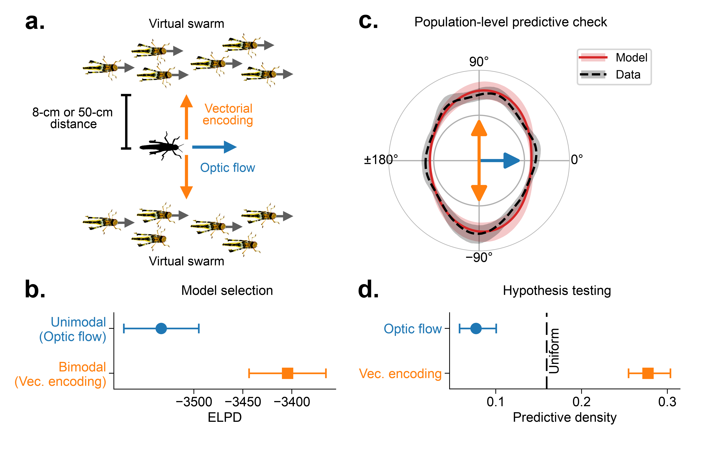

<!doctype html>
<html lang="en"><meta charset="utf-8"><meta name="viewport" content="width=device-width,initial-scale=1">
<title>Locust circular-statistics figure</title>
<style>body{margin:0;background:#f5f5f4;color:#262626;font:15px/1.65 Arial,sans-serif}
main{max-width:1100px;margin:40px auto;padding:0 24px}figure{margin:0}
.figure{background:white;padding:20px;border:1px solid #e6e6e6}img{display:block;width:100%;height:auto}
figcaption{max-width:94ch;margin:24px auto}a{color:#665017}nav{margin-bottom:18px}</style>
<main><nav><a href="locust_circ_stats_figure.svg">SVG</a> · <a href="locust_circ_stats_figure.pdf">PDF</a> · <a href="locust_circ_stats_figure.json">provenance</a></nav>
<figure><div class="figure"></div>
<figcaption>Locust circular statistics. (a) Virtual-swarm schematic of the free-flight arena. (b) Leave-one-out cross-validated predictive density of the bimodal and unimodal course models (+/- one standard error). (c) Population-level predictive check: model posterior-predictive direction density against the bootstrap KDE of the observed bearings, with the optic-flow (forward) and vectorial-encoding (sideways) hypotheses. (d) Posterior predictive density at the hypothesized directions against the uniform reference.</figcaption></figure></main>
